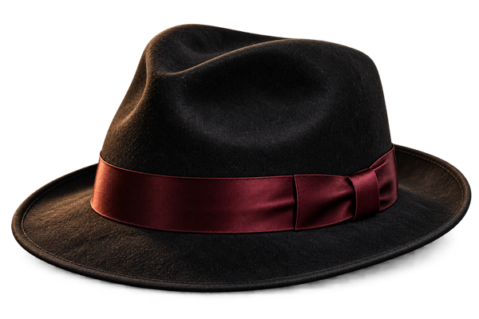

ふるさとの風景
川と田畑に囲まれた町で生まれました。朝の水音、夕暮れの土の匂い。遠くへ出かけるようになっても、心のどこかに、あの町の風景が残っています。
人物・経歴はすべて架空です。
A07 夜の回想録

静かな夜に、歩んだ道を振り返ります。出会いと選んだ道、そのひとつひとつに、私の時間が刻まれています。
川と田畑に囲まれた町で生まれました。朝の水音、夕暮れの土の匂い。遠くへ出かけるようになっても、心のどこかに、あの町の風景が残っています。
子どもの頃は、身近な材料で何かを作るのが好きでした。うまく飛ばない紙飛行機を折り直したり、小さな棚を作ったり。失敗しながら工夫する楽しさを、遊びの中で覚えました。
学校では、友人と一緒に答えを考える時間が楽しみでした。「急がなくても、自分の手で確かめてごらん」。先生にかけてもらった言葉は、働くようになってからも、心の支えになりました。
家具を作る仕事に就き、木の性質を見ながら、毎日少しずつ腕を磨きました。目立たない部分まで丁寧に仕上げること。長く使ってもらえるものを作ること。それが私の仕事の喜びでした。
家族と過ごす時間は、特別な出来事ばかりではありません。夕食の席で話したこと、休日に歩いた道、何気なく笑い合ったこと。振り返ると、そんな日常こそが大切な宝物です。
仕事を一区切りした頃、家の小さな庭に手を入れ始めました。忙しい時には気づかなかった季節の変化が、少しずつ見えてきました。新しい楽しみは、遠くではなく、暮らしのそばにありました。
忘れたくない景色と、心に仕舞った記憶。好きな時間も、乗り越えた日も、今の私へつながっています。
今も、木の道具を手入れしたり、庭の草花を育てたりする時間が好きです。同じことを繰り返しているようでも、毎日、小さな発見があります。手を動かすと、心も自然と落ち着きます。
列車で海の見える町を訪れた日のことを、よく思い出します。窓の外を流れる景色、駅で買ったお弁当、夕方の波の音。旅の思い出には、その時に交わした会話も一緒に残っています。
古くなった椅子を直して家族に渡した時、とても喜んでもらえました。「まだまだ使えるね」と言われ、私まで嬉しくなりました。誰かの暮らしに役立つことが、今も私の喜びです。
思うように仕上がらず、やり直した仕事もありました。困った時に助けてくれた仲間のおかげで、一人で抱え込まないことを学びました。苦労の中にも、人の温かさを感じる出来事がありました。
多くを語らなくても、伝えたい想いがあります。大切な人への感謝と、これからの日々への願いを、言葉に残します。
朝、窓を開けて庭の様子を見ることから、一日が始まります。散歩をしたり、本を開いたり、気になっていた道具を整えたり。自分の歩幅で過ごせる毎日を、大切にしています。
これまでそばにいてくれた家族へ、一緒に働いた仲間へ、長く付き合ってくれる友人へ。照れくさくて言えなかったこともありますが、今は素直に、ありがとうと伝えたいと思います。
大きなことができなくても、目の前の一つを丁寧にする。その積み重ねが、いつか自分を支えてくれると思います。人と比べすぎず、それぞれの歩みを大切にしてほしいです。
まだ訪れたことのない町へ、ゆっくり列車で出かけてみたいです。家族や友人と、また一つ、新しい思い出を作れたら嬉しく思います。私の物語は、これからも少しずつ続いていきます。